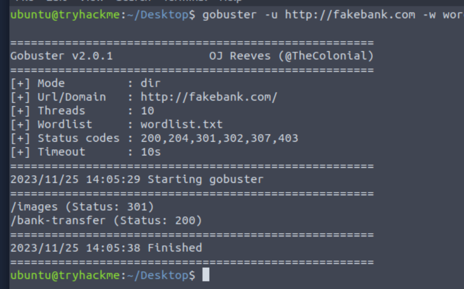
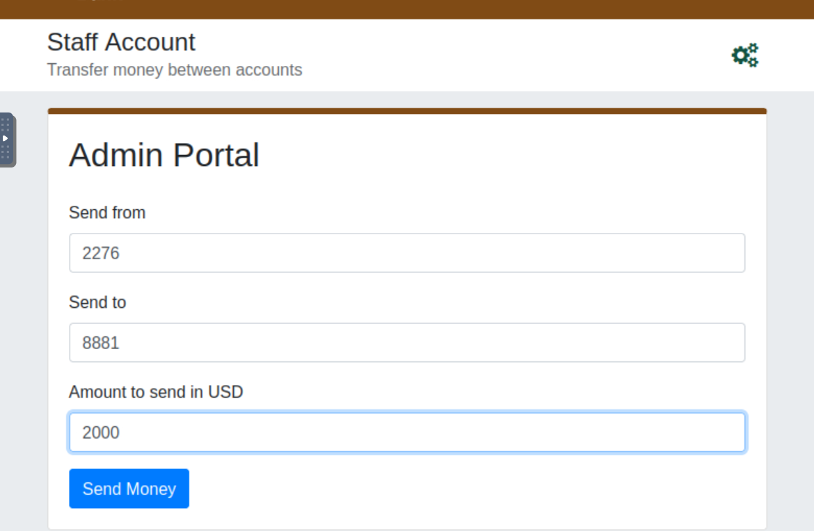
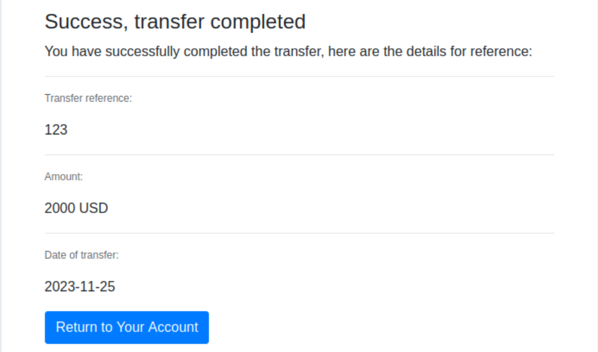
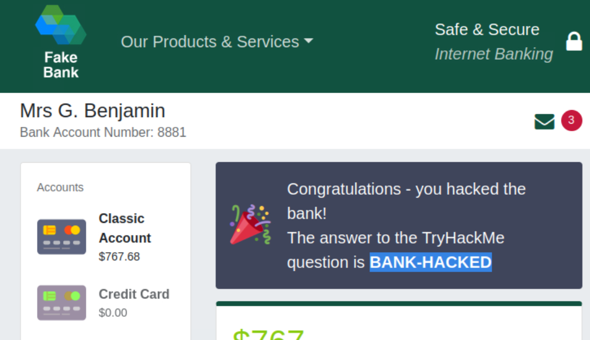

Thm-Intro to Offensive Security
最后更新时间:
文章总字数:
预计阅读时间:
0x00 前言
最近看到有个红桥杯渗透比赛，进群看了几眼发现大佬真多，也没细细了解，只知道佬是从thm中开始学习红队的，这令对红队痴迷的我瞬间来了兴趣（实际上是实战太菜了，一坨屎。。）但这里也没规划什么路线，还是看到什么学什么，我直接从简单开始了，先将免费的做完，之后看看有没有订阅的必要。
0x01 Task 1
什么是进攻性安全？
简而言之，攻击性安全是闯入计算机系统、利用软件错误并查找应用程序中的漏洞以获得未经授权的访问的过程。
为了击败黑客，您需要像黑客一样行事，在网络犯罪分子之前发现漏洞并推荐补丁，就像您在这个房间里所做的那样
另一方面，还有防御安全，这是通过分析和保护任何潜在的数字威胁来保护组织的网络和计算机系统的过程；在数字取证室了解更多信息。
在防御性网络角色中，您可以调查受感染的计算机或设备以了解其被黑客攻击的方式、追踪网络犯罪分子或监控基础设施是否存在恶意活动。
以下哪个选项更能代表您模拟黑客行为以查找系统漏洞的过程？
- Offensive Security 进攻性安全
- Defensive Security 防御安全
这里肯定就是进攻性安全，毋庸置疑。
0x02 Task 2
破解你的第一台机器
在进入网络安全职业以及什么是进攻性安全之前，让我们先介绍一下黑客攻击（是的，这是合法的，所有练习都是假模拟）
单击“启动机器”按钮。一旦在浏览器的分屏视图中加载，您将可以访问一台机器，您将使用该机器来破解名为 FakeBank 的虚假银行应用程序。如果您没有看到计算机出现，请使用此页面右上角的蓝色“显示拆分视图”按钮。
我们将使用名为“GoBuster”的命令行应用程序来暴力破解 FakeBank 的网站以查找隐藏的目录和页面。 GoBuster 将获取潜在页面或目录名称的列表，并尝试使用其中的每个名称访问网站；如果该页面存在，它会告诉您。
这里我们根据提示打开终端输入以下命令：
1 | |
这里也可以知道这跟dirsearch类似

最终我们扫出如下目录
1 | |
接下来就是入侵银行，这里我们可以看到上述目录中含有一个bank-transfer目录，翻译一下差不多就是银行转账的意思，那这里肯定是敏感页面。接着这里提示：
1 | |
这里我们到对应网站访问/bank-transfer，可以看到如下页面

我们根据提示填写上图三个输入框即可，如下图可以看到成功转入我们的账号

接下来根据提示返回我们的账户页面，发现的确成功转入，并且答案也告诉了我们，直接提交即可

小结：如果您是渗透测试人员或安全顾问，您可以为公司执行此练习，以测试其 Web 应用程序中的漏洞；查找隐藏页面以调查漏洞。
0x03 Task 3
我怎样才能开始学习？
人们常常想知道其他人如何成为黑客（安全顾问）或防御者（打击网络犯罪的安全分析师），答案很简单。分解它，学习您感兴趣的网络安全领域，并定期进行实践练习。养成每天在 TryHackMe 上学习一点的习惯，您将获得在该行业找到第一份工作所需的知识。
这里还给我们分享了一些大佬哈哈：
相信我们：你能行的！看看一些使用 TryHackMe 获得第一份安全工作的人：
- Paul went from a construction worker to a security engineer. Read more.
保罗从一名建筑工人变成了一名安全工程师。阅读更多。 - Kassandra went from a music teacher to a security professional. Read more.
卡珊德拉从一名音乐老师变成了一名安全专家。阅读更多。 - Brandon used TryHackMe while at school to get his first job in cyber. Read more.
Brandon 在学校时使用 TryHackMe 找到了他的第一份网络工作。阅读更多。
有哪些职业？
网络职业室更深入地介绍网络领域的不同职业。然而，这里是一些进攻性安全角色的简短描述：
- Penetration Tester - Responsible for testing technology products for finding exploitable security vulnerabilities.
渗透测试员 - 负责测试技术产品以查找可利用的安全漏洞。 - Red Teamer - Plays the role of an adversary, attacking an organization and providing feedback from an enemy’s perspective.
红队队员 - 扮演对手的角色，攻击组织并从敌人的角度提供反馈。 - Security Engineer - Design, monitor, and maintain security controls, networks, and systems to help prevent cyberattacks.
安全工程师 - 设计、监控和维护安全控制、网络和系统，以帮助防止网络攻击。